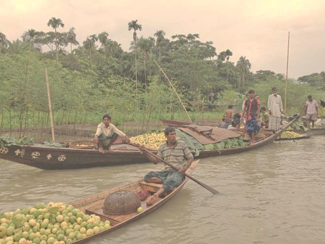
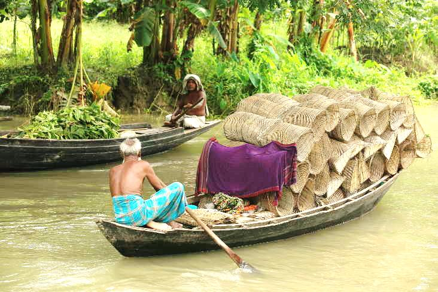

A floating market is a market where goods are sold from boats. Originating in times and places where water transport played an important role in daily life, most floating markets operating today mainly serve as tourist attractions, and are chiefly found in Thailand, Indonesia, Vietnam, Sri Lanka, Bangladesh and India.The floating market appears as the centre of Barisal’s (aka The Venice of Bengal) beauty. Some floating market of Bangladesh are-
Guava market
The floating guava market of Bangladesh is located in different districts of Jhalokati of Barisal Division and Swarupkathi of Pirojpur. The most famous of these are Bhimruli, Asghar, Kurniana Bazar. Many of these floating markets compare with Thailand's floating market.The buyers bought guava from numerous guava gardens in the region and traders. There is numerous guava garden around the village of Vimaruli. Not the only guava, but there are also other fruits sold in this market.
Boat market
Boat makers at the weekly “Noukar Haat” (boat market) in Kuriana (কুড়িয়ানা) under the Swarupkathi Upazila of Pirojpur district are doing brisk business during this monsoon season. The two-kilometre-long marketplace is noted for the trade-in different varieties of boats during the monsoon season. The market runs every Friday from May to November. “Panis” or “Pinis”, “Dingi” and “Naak Golui” are the types of boats available for sale, built by local craftsmen from the Muktahar, Chami, Bolivia, Inderhaat, Botha Kata, Dubi and Kathali villages.
